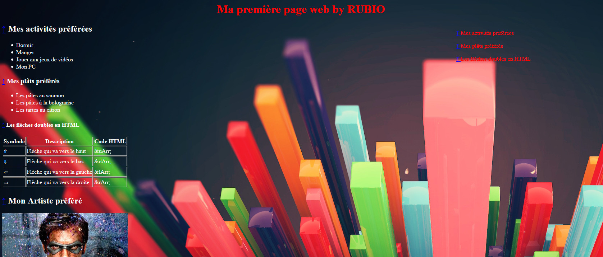

Tout récemment nous avons commencé à travailler sur la programmation web sous language HTML en utilisant le language CSS pour la mise en forme de nos sites internet. Voici un exemple de ce que nous avons appris à faire avant les vacances pour nous préparer au travail que je vous présente actuellement :
Pour se perfectionner il a bien évidemment fallu faire beaucoup de recherche pour apprendre à utiliser le CSS et structurer nos sites internet.
Mise en page par RUBIO Anthony, élêve de Terminale S1